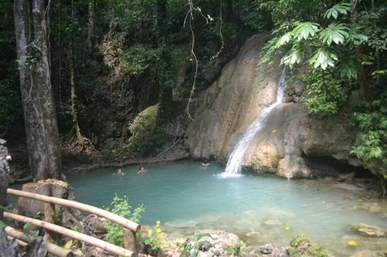

Let's find out.
BORACAY

Boracay is not just one of the best tourist spots in Aklan but also consecutively being on the list of “World’s Best Islands” by international travel magazines and agencies. It is a small island at the northwest tip of Panay Island continually being visited by millions of tourists all year round. The White Beach is the island's most famous beach, stretching 4 kilometers and lined with everything from affordable to high-end resorts and hotels, restaurants, and dive shops. Visitors to the "Island of Bliss" can enjoy a variety of activities during the day, including parasailing, wind surfing, scuba diving, kiteboarding, and fly fishing. The tourists can then enjoy the fire dance and party all night long. Around Boracay Island, there are a total of 13 recognized beaches.
ARIEL'S POINT

Ariel's Point, also known as Batason Point, is a fantastic site in Aklan that should not be overlooked, particularly when traveling to or from Boracay. It's a stunning seaside resort located on a limestone cliff amidst lush greenery. Cliff diving is the most exciting and distinctive activity available at this location. Daring tourists can dive down into the deep seas below from various levels of diving planks or platforms on a limestone cliff. Enjoy kayaking, stand-up paddling, and snorkeling in the nearby seas, which are rich with marine life.
HINUGTAN BEACH

Hinugtan Beach, which is untouched and secluded, is one of the top tourist destinations in Aklan. It's a beautiful white sand beach with turquoise sea water, palm trees, and bermuda grass. Crags and mountains surround both ends of the lengthy stretch of white sand beach. It's a beautiful spot to spend time with family and/or friends while taking in the peace and quiet. Visitors can go snorkeling in the clear waters, climb in the neighboring mountains, play Frisbee on the white sand, or simply relax in a hammock.
HACIENDA MARIA
Hacienda Maria is a 14-hectare natural wonderland that serves as an ecotourism destination in the province of Aklan, attracting both local and international visitors. A waterfall, caves, and a Hot Pot Jacuzzi are among the site's highlights. On the 10 foot deep plunge pool of the waterfall, visitors can enjoy swimming and cliff jumping. Then go spelunking in the two caverns that are full of sparkling stalactite and stalagmite formations that are worth examining. After that, unwind by soaking in the Hot Pot Jacuzzi ("kawa"), which is filled with lukewarm water and herbs leaves and heated by firewood.
BAKHAWAN ECO PARK

Bakhawan Eco Park is one of Aklan's most popular tourist destinations, and it's a great place to visit if you want to relax and enjoy the scenery. This Eco Park is a 220-hectare mangrove forest that has been dubbed the Philippines' most successful mangrove replanting project. It protects the surrounding community from natural disasters such as flooding and storm surges. A 1.3-kilometer wood-and-bamboo boardwalk created around the mangrove forest can be followed from the entrance to the healthy mangroves, flying birds, bamboo bridge, and a magnificent river to explore the area. A wonderful vista of a shallow lagoon, a sandbar, and the huge Sibuyan Sea awaits at the end of the wooden trail.
PAGTAPAT MANGROVE PARK

The quiet and tranquil environment of Pagatpat Mangrove Park has made it a popular tourist attraction in Aklan. It is a mangrove forest and a fish sanctuary bordering the Sibuyan Sea. The Pagatpat Mangrove Park, like Bakawan Eco Park, has a linked bamboo trail where visitors can walk and explore the environment. Visitors can relax at one of the park's many kiosks while taking in the tranquil atmosphere. The park has a function space that is perfect for meetings, retreats, and special events. The sunset is best seen from here.
JAWILI FALLS

Jawili Falls is one of Aklan's most unique and popular tourist attractions. It's a seven-basin waterfall where freshwater rushes down a massive limestone staircase from one basin to the next. For swimming and cliff jumping, each falls features a plunge pool with a significant depth and width. A wonderful view of each basin can be found at the top of the falls, with lush trees on both sides and a stunning sky above. For the comfort of the guests, concrete steps were created, as well as picnic cottages. Jawili Beach is a short distance from the falls and would make an excellent side trip.
TIGAYON HILL AND CAVES

Tigayon Hill and Caves, also known as Bukid Tigayon, was formerly thought to be an enchanting site where fairies and supernatural beings resided, but they have since fled due to the increased number of visitors. On Tigayon Hill, there are two caves where earlier National Museum excavations yielded the finding of human bones and Chinese artifacts, which were later displayed at the museum at the base of the hill. Visitors will pass through a massive Balete Tree and reach the Grotto of Virgin Mary, a chapel, and a spectacular view of the Aklan River through a concrete pathway and staircases.
NABAS WIND FARM

The Nabas Wind Farm is a unique tourist attraction in Aklan. The province's 18 massive wind turbines are strategically positioned along a mountain range, supplying clean and sustainable energy to the Western Visayas grid. This place is a popular tourist destination with breathtaking views of the lush mountains of Aklan and the huge ocean. Many visitors are captivated by the stunning sights and refreshing breeze.
HUROM-HUROM COLD SPRING

The best summer destination in the province of Aklan is Hurom-Hurom Cold Spring. It is the province's premier, largest, and most popular cold spring source, with pure water flowing from the rocks. It was converted into a family-owned cold spring resort, which later became a popular tourist destination for both local and international visitors. There is a large cold spring pool where everyone can swim. The region is completely surrounded by thick greenery.